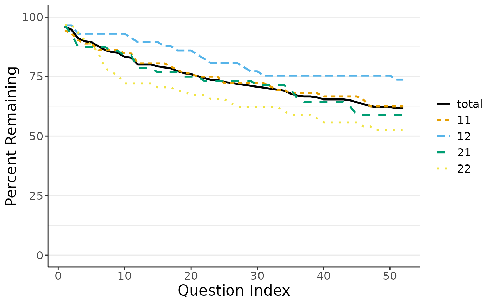
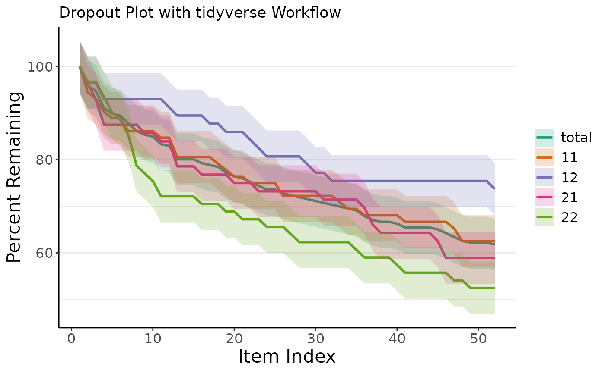

Though the low-hurdle of the online version with its graphical user interface (GUI) is appealing for many use cases, there are good reasons to directly use dropR’s backend in the R console without the GUI: Some data.frames may need extra formatting or additional cleaning before they suit the dropR input format or you may want adapt and extend your analysis in a way the GUI does not allow to. If you are writing a report directly in RMarkdown, you can also make use of automatically reporting your results in your document or embedding a dropout plot from dropR.
Dropout Analysis Walkthrough
This section describes how to extract information on dropout from the demo data set without using the dropR shiny UI. First, let’s make sure the demo data set is loaded and available. The data set should look like this:
| obs_id | experimental_condition | vi_1 | vi_2 | vi_3 | … | vi_51 | vi_52 |
|---|---|---|---|---|---|---|---|
| 7a9f33 | 11 | 1 | 1 | 1 | 1 | 1 | |
| e11f94 | 22 | 1 | NA | 1 | NA | NA | |
| e72a50 | 22 | 1 | NA | 1 | 1 | 1 | |
| f90f5f | 11 | 1 | 1 | 1 | 1 | 1 | |
| 20bc72 | 12 | 1 | NA | 1 | 1 | 1 |
Basic Dropout Statistics
Now, let’s extract dropout, i.e., information on when a participant
dropped out of the questionnaire and never returned. For this, we need
to identify the last question that someone filled out before only
missing data is present a.k.a NAs. We will use the
add_dropout_idx function on the demo data set and add the
position of all question variables in the data. In the demo data,
questions are easily identified by their prefix vi_:
qs <- which(grepl("vi_", names(df)))
# add numeric drop out position to original dataset
df <- add_dropout_idx(df, q_pos = qs)
kable(head(df[,c(1:3,(ncol(df)-1):ncol(df))]))| obs_id | experimental_condition | vi_1 | vi_52 | do_idx |
|---|---|---|---|---|
| 7a9f33 | 11 | 1 | 1 | 53 |
| e11f94 | 22 | 1 | NA | 6 |
| e72a50 | 22 | 1 | 1 | 53 |
| f90f5f | 11 | 1 | 1 | 53 |
| 20bc72 | 12 | 1 | 1 | 53 |
| 76b97a | 22 | 1 | NA | 27 |
The experimental_condition column indicates belonging to
a sub sample, each of which was treated differently. For example, groups
receive a different sequence of questions or different wording.
Next we’ll compute a table containing basic dropout statistics for
each item using the compute_stats function.
stats <- compute_stats(df,
by_cond = "experimental_condition",
no_of_vars = length(qs))
kable(head(stats))| q_idx | condition | cs | N | remain | pct_remain |
|---|---|---|---|---|---|
| 1 | total | 0 | 246 | 246 | 1.0000000 |
| 2 | total | 10 | 246 | 236 | 0.9593496 |
| 3 | total | 13 | 246 | 233 | 0.9471545 |
| 4 | total | 22 | 246 | 224 | 0.9105691 |
| 5 | total | 25 | 246 | 221 | 0.8983740 |
| 6 | total | 26 | 246 | 220 | 0.8943089 |
Out of 246 participants in total in the demo sample, 246 participants
remain in the survey at the first question, accounting for 100 percent
of the sample. At the last question of the experiment, 61.79% of all
participants “survived”. The cs column shows the absolute
cumulative dropout count.
The stats table shows the dropout statistics for the total sample
first and if defined in the function by_cond, it also shows
the same statistics for each experimental condition separately. This
table is the basis for many further analyses and can easily be
reported.
Plotting Dropout Curves
Based on the above statistics table, dropR plots dropout curves very conveniently.
plot_do_curve(stats)
By default, the function to plot dropout curves chooses a color palette which is designed to de distinguishable for color blind individuals. Adhering to some journal guidelines, you may also choose a gray color palette, distinguishing the lines by line type and gray value.
Full Workflow Example using tidyverse
To wrap up this Walkthrough, we want to show you a full analysis
example in just six lines of code using tidyverse workflow
with functions from magrittr and ggplot2.
Specifically, it is very easy to pipe several dropR
functions to create the full analysis as well as plotting all at once.
Moreover, it is easy to customize the plot further using common
ggplot2 functions as shown. Assuming we want to create a
similar analysis as before with a customized plot output, we can achieve
this like so:
library(ggplot2)
dropRdemo %>%
add_dropout_idx(3:54) %>%
compute_stats(by_cond = "experimental_condition", no_of_vars = 52) %>%
plot_do_curve(linetypes = F, full_scale = F, show_confbands = T) +
labs(title = "Dropout Plot with tidyverse Workflow") +
scale_color_brewer(palette = "Dark2") + scale_fill_brewer(palette = "Dark2")
#> Scale for colour is already present.
#> Adding another scale for colour, which will replace the existing scale.
#> Scale for fill is already present.
#> Adding another scale for fill, which will replace the existing scale.
Next, you may want to run more statistical dropout analyses using
dropR. You can find an in-depth tutorial in our test
article.